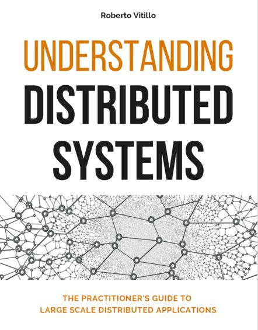
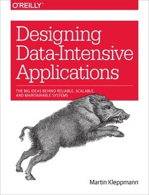

Software engineering interviews are challenging, but the good news is that the right preparation can make a big difference. A technical interview usually covers one of these areas: coding, system design or object-oriented design. To help you land a dream job, we put together a list of books that might be helpful.
Understanding Distributed Systems by Roberto Vitillo

This book teaches the fundamentals of distributed systems. The author does an excellent job explaining the network stack, data consistency models, resilience, scalability and reliability patterns, and much more. Link: http://bit.ly/dissystems
The Tech Resume Inside-Out by Gergely Orosz
A strong resume is your ticket to standing out among many competing candidates. This book’s content is well researched and aims to help you craft a professional looking resume. Best part: the author reached out to dozens of experienced technical recruiters and hands-on hiring managers to make sure the book is useful and factually correct. Full disclosure: I know him personally. Link: https://bit.ly/3lRLWXh
Designing Data-Intensive Applications by Martin Kleppmann

This classic 616-page book is considered to be a must-read for aspiring engineers who work on distributed systems. Best part: this book is very technical and contains a lot of in-depth discussion about scalability, consistency, reliability, efficiency and maintainability. Link: https://amzn.to/2K0PLfq
Disclaimer: I only recommend books that I have read. This section contains affiliate links. If you use these links to buy something, we may earn a small commission. Thanks.